전자기기기능사 (2007-09-16 기출문제)
1과목: 전기전자공학
1. 60[㎐]의 전원을 사용하는 정류기로서 360[㎐]의 맥동주파수를 나타내는 정류방식은?
- 3상 전파형
- 단상 브리지정류형
- 3상 반파형
- 반파 배전압 정류형
(정답률: 74%)

2. AM통신 방식과 비교하여 FM통신 방식에 대한 설명 중 적합 하지 않은 것은?
- IDC부가 등으로 음질(고충실도)이 좋다.
- 충격성 잡음을 제거하여 S/N비가 개선된다.
- 대역폭이 넓으므로 낮은 주파수에서 많이 사용된다.
- 송·수신기사 복잡해진다.
(정답률: 52%)
3. 다음 연산증폭기의 궤환율은 약 얼마인가?
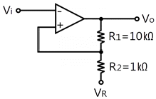
- 0.9
- 0.11
- 0.09
- 0.01
(정답률: 33%)
4. 정류기의 평활회로는 어느 여파기에 속하는가?
- 대역통과 여파기
- 고역통과 여파기
- 저역통과 여파기
- 대역소거 여파기
(정답률: 74%)
5. 그림과 같이 덧셈기를 나타내는 회로에서 R1, R2, R3, Rf가 모두 같다고 할 때, 이 덧셈기의 출력 eo를 나타내는 것은?
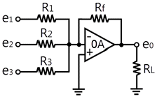
- e1+e2-e3
- -(e1+e2+e3)
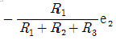
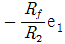
(정답률: 70%)
6. 다음과 같은 연산증폭기의 기능으로 가장 적합한 것은? (단, Ri=Rf이고 연산증폭기는 이상적이다)
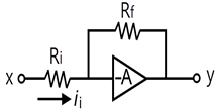
- 상배수기
- 부호변환기
- 곱셈기
- 전위차계
(정답률: 85%)
7. 다음 중 동상신호제거비(CMRR)를 나타내는 식으로 가장 적합한 것은?
- 차동이득/동상이득
- 1/(차동이득×동상이득)
- 동상이득/차동이득
- 차동이득×동상이득
(정답률: 51%)
8. 쌍안정 멀티바이브레이터를 잘못 설명한 것은?
- 입력펄스가 공급되기 전에는 출력상태가 바뀌지 않는다.
- 입력 트리거펄스 2개마다 2개의 펄스 출력을 낸다.
- 2개의 안정상태를 가진다.
- 플립플롭회로이며 전자계산기에 사용된다.
(정답률: 74%)
9. 수정 발진회로의 특징에 대한 설명 중 적합하지 않은 것은?
- Q값이 매우 높다.
- 저주파 용도로 널리 사용되고 있다.
- 정밀한 주파수를 얻기 위한 PLL회로 등에 사용된다.
- 주파수 안정도가 매우 높다.
(정답률: 50%)
10. 이상적인 연산증폭기에 관한 설명으로 틀리는 것은?
- 입력저항이 무한대이다.
- 전압이득이 무한대이다.
- 출력저항이 무한대이다.
- 대역폭이 무한대이다.
(정답률: 71%)
11. 60Ω 저항 3개의 조합으로 얻어지는 가장 큰 합성저항은?
- 20Ω
- 60Ω
- 102Ω
- 180Ω
(정답률: 84%)
12. 다음 중 궤환 발진기의 바크하우젠의 감쇠 진동 조건을 나타낸 것은?
- βA ＞ 1
- βA = 1
- βA = 0
- βA ＜ 1
(정답률: 34%)
13. 다음 중 정현파 발생회로인 것은?
- LC발진기
- 블로킹발진기
- UJT발진기
- 멀티바이브레이터
(정답률: 57%)
14. 다음 그림과 같은 회로는?
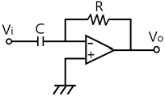
- 미분기
- 가산기
- 적분기
- 변별기
(정답률: 76%)
15. 포토커플러(photo coupler)의 특성에 대한 설명으로 옳은 것은?
- 응답속가 비교적 느리다.
- 출력신호에서 입력신호로 영향이 있다.
- 논리소자와의 접속이 곤란하다.
- 입·출력간은 전기적으로 절연되어 있다.
(정답률: 60%)
2과목: 전자계산기일반
16. 100[V], 500[W]의 전열기를 90[V]에서 사용했을 때 소비 전력은 몇[W]인가?
- 300
- 4⑤
- 510
- 715
(정답률: 63%)
17. 다음 그림과 같은 형식은 어떤 주소 지정 형식인가?
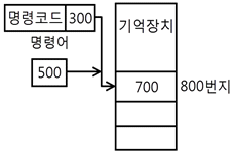
- 직접데이터 형식
- 상대주소 형식
- 간접주소 형식
- 직접주소 형식
(정답률: 56%)
18. 중앙처리장치에서 마이크로 오퍼레이션이 순서 적으로 일어나게 하려면 무엇이필요한가?
- 누산기
- 제어신호
- 스위치
- 레지스터
(정답률: 62%)
19. 컴퓨터로 처리하고자 하는 문제를 분석하고 그 처리 순서를 단계화하여 상호 간의 관계를 알기 쉽게 약속된 기호와 도형을 사용해서 나타내는 것은?
- 문제 분석
- 입·출력 설계
- 프로그래밍 작성
- 순서도 작성
(정답률: 82%)
20. 마이크로컴퓨터의 직렬 입·출력 인터페이스가 아닌 것은?
- USART
- PPI
- SIO
- ACIA
(정답률: 52%)
21. 에러 발생률이 작아서 A/D변환 및 입·출력장치에 사용되는 코드는?
- 3초과코드
- 해밍코드
- 그레이코드
- 8421코드
(정답률: 46%)
22. 다음 중 2진수의 덧셈규칙에서 옳지 않은 것은?
- 0＋0＝0
- 0＋1＝1
- 1＋0＝1
- 1＋1＝2
(정답률: 78%)
23. 일정시간이 흐르면 전화가 방전되어 내용이 지워 지므로 지속적인 재충전(refreshing)이 필요하고 주로 컴퓨터의 주기억장치로 사용되는 것은?
- PROM
- EPROM
- SRAM
- DRAM
(정답률: 76%)
24. 다음은 마이크로프로세서의 입출력에서 사용되는 비동기신호의 그림이다. ( ) 안의 신호는?
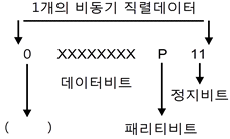
- 동기비트
- 시작비트
- 출력비트
- 핸드셰이킹 비트
(정답률: 44%)
25. 네트워크상에서 쓸 수 있도록 미국 선마이크로시스템 사에서 개발한 객체지향 프로그래밍언어는?
- 베이직(BASIC)
- 코볼 (COBOL)
- C언어
- 자바(JAVA)
(정답률: 60%)
26. 10진수 20(10)을 2진수로 변환하면?
- 11110(2)
- 10101(2)
- 10100(2)
- 00001(2)
(정답률: 69%)
27. 외관상 CD-ROM과 동일하지만 동영상 비디오 정보 등의 대용량을 저장하기 위해 개발되었으며, CD-ROM에 비해 약 7배의 저장용량이 가능하고 약 4.9GB정도 용량이 기본인 정보기억매체는?
- VCD
- V-CD
- CD-RW
- DVD-ROM
(정답률: 67%)
28. 다음 중 스택(stack)을 필요로 하는 명령형식 은?
- 0-주소
- 1-주소
- 2-주소
- 3-주소
(정답률: 61%)
29. 수신기의 내부잡음 특정에서 잡음이 없는 경우 잡음지수 F는?
- F = 1
- F ＞ 1
- F＜ 1
- F = 2
(정답률: 77%)
30. 오실로스코프의 수평축 입력단자를 이용하여 교류 측정 시 피측정 전압의 소인폭 조절과 관계있는 회로부분은?
- 수직축 증폭회로
- 트리거 발생회로
- 수평축 증폭회로
- 초퍼 스위칭회로
(정답률: 39%)
3과목: 전자측정
31. 안테나의 급전선 임피던스(Zr)가 75[Ω]이고, 여기에 특성임피던스(Zo)가 50[Ω]인 필터를 연결한다면 반사계수는 얼마인가?
- 0.1
- 0.2
- 0.4
- 0.75
(정답률: 60%)
32. 다음 중 오실로스코프로 직접 관측 할 수 없는 것은?
- 변조도
- 주파수
- 왜곡율
- 임피던스
(정답률: 48%)
33. 오실로스코프로 파형 관측 시 시간축 톱니파를 피측정 전압에 동기 시키는 이유는?
- 파형을 크게 하기 위하여
- 파형을 선명하게 하기 위하여
- 파형을 밝게 하기 위하여
- 파형을 정지시키기 위하여
(정답률: 45%)
34. 참값이 1.01[V]인 전압을 측정하였더니 1.1[ V] 였다고 한다. 이때의 오차율은?
- 0.89
- 0.089
- 0.0089
- 0.00089
(정답률: 55%)
35. 다음 중 오실로스코프에서 휘도(intensity)를 조정하는 것은?
- 양극전압
- 제어그리드전압
- 캐소드전압
- 편향판전압
(정답률: 60%)
36. 무부하시 단자전압이 100[V]이고 부하가 연결 됐을 때 단자 전압이 80[V]이면 이때의 전원 전압변동율은?
- 15%
- 20%
- 25%
- 35%
(정답률: 55%)
37. 지시 계기의 구비 조건으로 옳지 않은 것은?
- 눈금이 균등하거나 대수 눈금일 것
- 절연 내력이 낮고, 취급이 편리할 것
- 확도가 높고, 외부의 영향을 받지 않을 것
- 지시가 측정값의 변화에 신속히 응답할 것
(정답률: 70%)
38. 교번 자속과 맴돌이 전류의 상호 작용을 이용한 계기는?
- 전류력계형 계기
- 유도형 계기
- 가동철편형 계기
- 가동코일형 계기
(정답률: 68%)
39. 지시계기의 구성 요소가 아닌 것은?
- 구동장치
- 발진장치
- 제동장치
- 제어장치
(정답률: 81%)
40. 전압계와 전류계의 연결 방법으로 옳은 것은? (A는 전류계, V전압계)
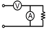
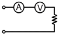
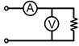
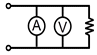
(정답률: 77%)
41. 라디오 수신기의 증폭기에서 중역대 증폭도를 A라 하면 저역 차단 주파수의 증폭도는?
- A의 2배이다.
- A의 1/2이다.
- A의
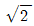
배이다. - A의
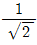
이다.
(정답률: 43%)
42. 궤환 제어계(feed back control)에서 공정제어 제어량에 해당되지 않는 것은?
- 유량
- 전압
- 압력
- 온도
(정답률: 51%)
43. 다음 컬러 수상기의 협대역 방식 구성도에서 □ 부분에 들어 갈 내용은?
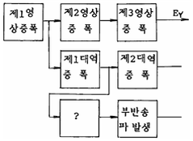
- 영상 출력
- 버어스트 증폭
- x축 복조
- 수정 휠터
(정답률: 68%)
44. 공중선의 전류가 57.3[A]이고 복사저항이 250[Ω], 손실저항이 50[Ω]일 때 공중선 능률은 약 얼마인가?
- 0.83
- 0.22
- 1.23
- 50
(정답률: 50%)
45. 공기 중에 떠 있는 먼지나 가루를 제거하는 장치 에 초음파 응용기기를 사용하는데, 이것은 초음파의 어느 작용을 응용한 것인가?
- 응집 작용
- 캐비테이숀
- 확산 작용
- 에멀션화 작용
(정답률: 68%)
4과목: 전자기기 및 음향영상기기
46. 다음 중 고주파 가열은 어떤 전력 손실에 의하여 발열시키는 방식인가?
- 유전체 손
- 와류 전류손
- 히스테리시스 손
- 표피작용에 의한 손
(정답률: 52%)
47. FM 증폭기에서 C급 증폭방식이 많이 쓰이는 이유는?
- 증폭효율을 올리기 위하여
- 고조파를 적게 하기 위하여
- 주파수 특성을 좋게 하기 위하여
- 타방식으로는 증폭이 곤란하므로
(정답률: 55%)
48. 다음 중 자동 온수기에서 서로 관계되지 않는 것은?
- 제어 대상 - 물
- 제어량 - 온도
- 조작량 - 물의 공급량
- 희망온도 - 목표값
(정답률: 59%)
49. 변위-임피던스 변환기에 해당되지 않는 것은?
- 슬라이드 저항
- 용량형 변환기
- 다이어프램
- 유도형 변환기
(정답률: 62%)
50. 등화 증폭기의 역할로서 거리가 먼 것은?
- 고역에 대한 이득을 낮추어 원음 재생이 실현되도록 한다.
- 고음역의 잡음을 감쇄시킨다.
- 라디오의 음질을 좋게 한다.
- 미약한 신호를 증폭한다.
(정답률: 58%)
51. 안테나 전력이 100[W]에서 400[W]로 증가하면 동일 지점의 전계강도는 몇 배로 변하는가?
- 1/2
- 1/4
- 2
- 4
(정답률: 47%)
52. 스피커의 재생 음악을 3분할하는 방식의 유닛이 아닌 것은?
- 우퍼(Woofer)
- 디바이더(Divider)
- 트위터(Tweeter)
- 스쿼커(Squeaker)
(정답률: 61%)
53. 초음파의 전파에 있어서 캐비테이션(cavitation) 이란?
- 액체인 매질에서 기포의 생성과 소밀 현상
- 액체인 매질에서 기포의 생성과 횡파 현상
- 액체인 매질에서 종파에 의한 협대역 잡음
- 액체인 매질에서 횡파에 의한 광대역 잡음
(정답률: 58%)
54. 다음 중 태양전지에 축전장치가 필요한 이유는?
- 빛의 반사를 위해서
- 빛의 굴절을 위해서
- 연속적인 사용을 위해서
- 위의 3가지 모두를 위해서
(정답률: 79%)
55. 다음 중 계기 착륙 방식이라고도 하며 로컬라이저, 글라이드 패드, 및 팬 마커로 구성되는 것은?
- ILS
- NOB
- VOR
- DME
(정답률: 72%)
56. 자기녹음기의 주파수 보상법으로 옳은 것은?
- 녹음 때에나 재생 때에 모두 고역을 보상한다.
- 녹음 떼에나 재생 때에 모두 저역을 보상한다.
- 녹음 떼에는 저역을 재생 때에는 고역을 보상한다.
- 녹음 떼에는 고역을 재생 때에는 저역을 보상한다.
(정답률: 48%)
57. 심장의 박동에 따르는 혈관의 맥동상태를 측정하고 기록하는 의용 전자기기는?
- 맥파계(sphygmograph)
- 근전계(electgomraph)
- 심음계(pnono cardiograph)
- 심전계(electrocargraph)
(정답률: 68%)
58. 프로세스 제어는 어느 제어에 속하는가?
- 추치 제어
- 속도 제어
- 정치 제어
- 프로그램 제어
(정답률: 60%)
59. 다음 중 메인앰프의 구비조건이 아닌 것은?
- 주파수 특성이 모든 주파수에서 평탄할 것
- 의율이 적을 것
- S/N가 우수할 것
- 전원리플이 많을 것
(정답률: 46%)
60. 공정제어계 시스템에서 신호변환기나 지시기록계 등이 포함 될 수 있는 부분은?
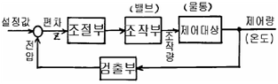
- 조절부
- 조작부
- 검출부
- 제어대상
(정답률: 45%)